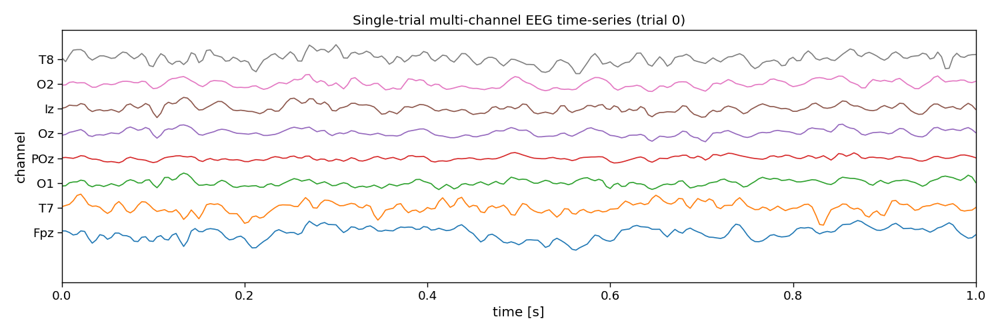
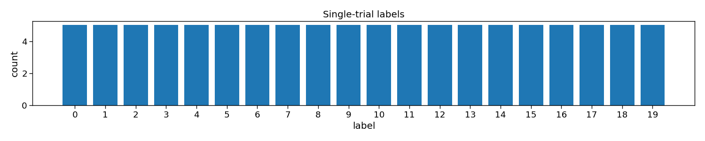
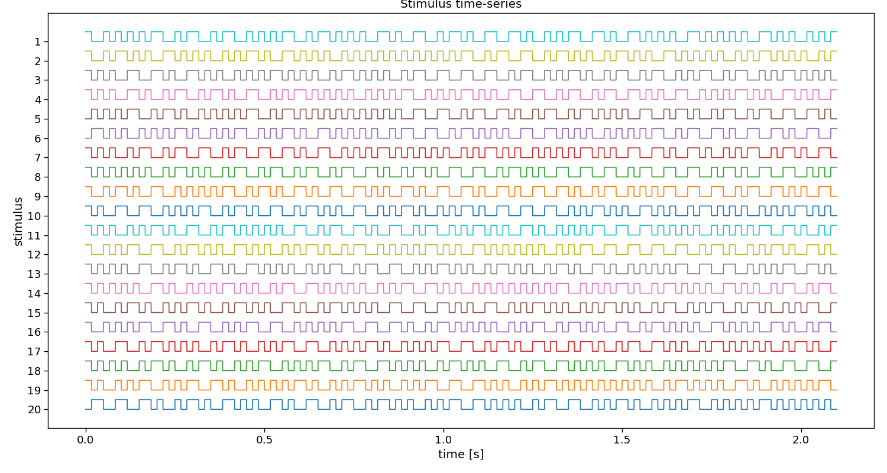

Note
Go to the end to download the full example code.
eCCA
This script shows how to use eCCA from PyntBCI for decoding c-VEP trials. The eCCA method uses a template matching classifier where templates are estimated using averaging and canonical correlation analysis (CCA).
The data used in this script come from Thielen et al. (2021), see references [1] and [2].
References
import os
import matplotlib.pyplot as plt
import numpy as np
import seaborn
import pyntbci
seaborn.set_context("paper", font_scale=1.5)
Set the data path
The cell below specifies where the dataset has been downloaded to. Please, make sure it is set correctly according to the specification of your device. If none of the folder structures in the dataset were changed, the cells below should work just as fine.
path = os.path.join(os.path.dirname(pyntbci.__file__)) # path to the dataset
subject = "sub-01" # the subject to analyse
The data
The dataset consists of (1) the EEG data X that is a matrix of k trials, c channels, and m samples; (2) the labels y that is a vector of k trials; (3) the pseudo-random noise-codes V that is a matrix of n classes and m samples. Note, the codes are upsampled to match the EEG sampling frequency and contain only one code-cycle.
# Load data
fn = os.path.join(path, "data", f"thielen2021_{subject}.npz")
tmp = np.load(fn)
X = tmp["X"]
y = tmp["y"]
V = tmp["V"]
fs = int(tmp["fs"])
fr = 60
print("X", X.shape, "(trials x channels x samples)") # EEG
print("y", y.shape, "(trials)") # labels
print("V", V.shape, "(classes, samples)") # codes
print("fs", fs, "Hz") # sampling frequency
print("fr", fr, "Hz") # presentation rate
# Extract data dimensions
n_trials, n_channels, n_samples = X.shape
n_classes = V.shape[0]
# Read cap file
capfile = os.path.join(path, "capfiles", "thielen8.loc")
with open(capfile, "r") as fid:
channels = []
for line in fid.readlines():
channels.append(line.split("\t")[-1].strip())
print("Channels:", ", ".join(channels))
# Visualize EEG data
i_trial = 0 # the trial to visualize
plt.figure(figsize=(15, 5))
plt.plot(np.arange(0, n_samples) / fs, 25e-6 * np.arange(n_channels) + X[i_trial, :, :].T)
plt.xlim([0, 1]) # limit to 1 second EEG data
plt.yticks(25e-6 * np.arange(n_channels), channels)
plt.xlabel("time [s]")
plt.ylabel("channel")
plt.title(f"Single-trial multi-channel EEG time-series (trial {i_trial})")
plt.tight_layout()
# Visualize labels
plt.figure(figsize=(15, 3))
hist = np.histogram(y, bins=np.arange(n_classes + 1))[0]
plt.bar(np.arange(n_classes), hist)
plt.xticks(np.arange(n_classes))
plt.xlabel("label")
plt.ylabel("count")
plt.title("Single-trial labels")
plt.tight_layout()
# Visualize stimuli
fig, ax = plt.subplots(1, 1, figsize=(15, 8))
pyntbci.plotting.stimplot(V, fs=fs, ax=ax, plotfs=False)
fig.tight_layout()
ax.set_title("Stimulus time-series")
- 
- 
- 
X (100, 8, 2520) (trials x channels x samples)
y (100,) (trials)
V (20, 504) (classes, samples)
fs 240 Hz
fr 60 Hz
Channels: Fpz, T7, O1, POz, Oz, Iz, O2, T8
Text(0.5, 1.0, 'Stimulus time-series')
ERP CCA
The full ERP CCA (eCCA) pipeline is implemented as a scikit-learn compatible class in PyntBCI in pyntbci.classifiers.eCCA. All it needs are the lags if a circular shifted code is used (not used here) in lags, the sampling frequency fs, and the duration of one period of a code as cycle_size.
When calling eCCA.fit(X, y) with training data X and labels y, the template responses are learned as well as the spatial filters eCCA.w_.
# Perform CCA
cycle_size = 2.1 # 2.1 second code cycle length
ecca = pyntbci.classifiers.eCCA(lags=None, fs=fs, cycle_size=cycle_size)
ecca.fit(X, y)
print("w: shape:", ecca.w_.shape, ", type:", ecca.w_.dtype)
# Plot CCA filters
fig, ax = plt.subplots(figsize=(5, 3))
pyntbci.plotting.topoplot(ecca.w_, capfile, ax=ax)
ax.set_title("Spatial filter")
w: shape: (8, 1) , type: float64
Text(0.5, 1.0, 'Spatial filter')
Cross-validation
To perform decoding, one can call eCCA.fit(X_trn, y_trn) on training data X_trn and labels y_trn and eCCA.predict(X_tst) on testing data X_tst. In this section, a chronological cross-validation is set up to evaluate the performance of eCCA.
trialtime = 4.2 # limit trials to a certain duration in seconds
intertrialtime = 1.0 # ITI in seconds for computing ITR
n_samples = int(trialtime * fs)
# Chronological cross-validation
n_folds = 5
folds = np.repeat(np.arange(n_folds), int(n_trials / n_folds))
# Loop folds
accuracy = np.zeros(n_folds)
for i_fold in range(n_folds):
# Split data to train and valid set
X_trn, y_trn = X[folds != i_fold, :, :n_samples], y[folds != i_fold]
X_tst, y_tst = X[folds == i_fold, :, :n_samples], y[folds == i_fold]
# Train template-matching classifier
ecca = pyntbci.classifiers.eCCA(lags=None, fs=fs, cycle_size=2.1)
ecca.fit(X_trn, y_trn)
# Apply template-matching classifier
yh_tst = ecca.predict(X_tst)
# Compute accuracy
accuracy[i_fold] = np.mean(yh_tst == y_tst)
# Compute ITR
itr = pyntbci.utilities.itr(n_classes, accuracy, trialtime + intertrialtime)
# Plot accuracy (over folds)
plt.figure(figsize=(15, 3))
plt.bar(np.arange(n_folds), accuracy)
plt.axhline(accuracy.mean(), linestyle='--', alpha=0.5, label="average")
plt.axhline(1 / n_classes, color="k", linestyle="--", alpha=0.5, label="chance")
plt.xlabel("(test) fold")
plt.ylabel("accuracy")
plt.legend()
plt.title("Chronological cross-validation")
plt.tight_layout()
# Print accuracy (average and standard deviation over folds)
print(f"Accuracy: avg={accuracy.mean():.2f} with std={accuracy.std():.2f}")
print(f"ITR: avg={itr.mean():.1f} with std={itr.std():.2f}")
Accuracy: avg=1.00 with std=0.00
ITR: avg=49.9 with std=0.00
Learning curve
In this section, we will apply the decoder to varying number of training trials, to estimate a so-called learning curve. With this information, one could decide how much training data is required, or compare algorithms on how much training data they require to estimate their parameters.
trialtime = 4.2 # limit trials to a certain duration in seconds
n_samples = int(trialtime * fs)
# Chronological cross-validation
n_folds = 5
folds = np.repeat(np.arange(n_folds), int(n_trials / n_folds))
# Set learning curve axis
# Note, eCCA needs at least 1 trial per class if lags=None
train_trials = np.arange(n_classes, 1 + np.sum(folds != 0))
n_train_trials = train_trials.size
# Loop folds
accuracy = np.zeros((n_folds, n_train_trials))
for i_fold in range(n_folds):
# Split data to train and test set
X_trn, y_trn = X[folds != i_fold, :, :n_samples], y[folds != i_fold]
X_tst, y_tst = X[folds == i_fold, :, :n_samples], y[folds == i_fold]
# Loop train trials
for i_trial in range(n_train_trials):
# Train classifier
ecca = pyntbci.classifiers.eCCA(lags=None, fs=fs, cycle_size=2.1)
ecca.fit(X_trn[:train_trials[i_trial], :, :], y_trn[:train_trials[i_trial]])
# Apply classifier
yh_tst = ecca.predict(X_tst)
# Compute accuracy
accuracy[i_fold, i_trial] = np.mean(yh_tst == y_tst)
# Plot results
plt.figure(figsize=(15, 3))
avg = accuracy.mean(axis=0)
std = accuracy.std(axis=0)
plt.plot(train_trials * trialtime, avg, linestyle='-', marker='o', label="eCCA")
plt.fill_between(train_trials * trialtime, avg + std, avg - std, alpha=0.2, label="_eCCA")
plt.axhline(1 / n_classes, color="k", linestyle="--", alpha=0.5, label="chance")
plt.xlabel("learning time [s]")
plt.ylabel("accuracy")
plt.legend()
plt.title("Learning curve")
plt.tight_layout()
Decoding curve
In this section, we will apply the decoder to varying testing trial lengths, to estimate a so-called decoding curve. With this information, one could decide how much testing data is required, or compare algorithms on how much data they need during testing to classify single-trials.
trialtime = 4.2 # limit trials to a certain duration in seconds
intertrialtime = 1.0 # ITI in seconds for computing ITR
n_samples = int(trialtime * fs)
# Chronological cross-validation
n_folds = 5
folds = np.repeat(np.arange(n_folds), int(n_trials / n_folds))
# Set decoding curve axis
segmenttime = 0.1 # step size of the decoding curve in seconds
segments = np.arange(segmenttime, trialtime, segmenttime)
n_segments = segments.size
# Loop folds
accuracy = np.zeros((n_folds, n_segments))
for i_fold in range(n_folds):
# Split data to train and test set
X_trn, y_trn = X[folds != i_fold, :, :n_samples], y[folds != i_fold]
X_tst, y_tst = X[folds == i_fold, :, :n_samples], y[folds == i_fold]
# Setup classifier
ecca = pyntbci.classifiers.eCCA(lags=None, fs=fs, cycle_size=2.1)
# Train classifier
ecca.fit(X_trn, y_trn)
# Loop segments
for i_segment in range(n_segments):
# Apply classifier
yh_tst = ecca.predict(X_tst[:, :, :int(fs * segments[i_segment])])
# Compute accuracy
accuracy[i_fold, i_segment] = np.mean(yh_tst == y_tst)
# Compute ITR
time = np.tile(segments[np.newaxis, :], (n_folds, 1))
itr = pyntbci.utilities.itr(n_classes, accuracy, time + intertrialtime)
# Plot results
fig, ax = plt.subplots(2, 1, figsize=(15, 5), sharex=True)
avg = accuracy.mean(axis=0)
std = accuracy.std(axis=0)
ax[0].plot(segments, avg, linestyle='-', marker='o', label="eCCA")
ax[0].fill_between(segments, avg + std, avg - std, alpha=0.2, label="_eCCA")
ax[0].axhline(1 / n_classes, color="k", linestyle="--", alpha=0.5, label="chance")
avg = itr.mean(axis=0)
std = itr.std(axis=0)
ax[1].plot(segments, avg, linestyle='-', marker='o', label="eCCA")
ax[1].fill_between(segments, avg + std, avg - std, alpha=0.2, label="_eCCA")
ax[1].set_xlabel("decoding time [s]")
ax[0].set_ylabel("accuracy")
ax[1].set_ylabel("ITR [bits/min]")
ax[0].legend()
ax[0].set_title("Decoding curve")
fig.tight_layout()

Analyse multiple participants
# Set paths
path = os.path.join(os.path.dirname(pyntbci.__file__))
n_subjects = 5
subjects = [f"sub-{1 + i:02d}" for i in range(n_subjects)]
# Set trial duration
trialtime = 4.2 # limit trials to a certain duration in seconds
n_trials = 100 # limit the number of trials in the dataset
# Chronological cross-validation
n_folds = 5
folds = np.repeat(np.arange(n_folds), int(n_trials / n_folds))
# Loop participants
accuracy = np.zeros((n_subjects, n_folds))
for i_subject in range(n_subjects):
subject = subjects[i_subject]
# Load data
fn = os.path.join(path, "data", f"thielen2021_{subject}.npz")
tmp = np.load(fn)
fs = tmp["fs"]
X = tmp["X"][:n_trials, :, :int(trialtime * fs)]
y = tmp["y"][:n_trials]
V = tmp["V"]
# Cross-validation
for i_fold in range(n_folds):
# Split data to train and test set
X_trn, y_trn = X[folds != i_fold, :, :], y[folds != i_fold]
X_tst, y_tst = X[folds == i_fold, :, :], y[folds == i_fold]
# Train classifier
ecca = pyntbci.classifiers.eCCA(lags=None, fs=fs, cycle_size=2.1)
ecca.fit(X_trn, y_trn)
# Apply classifier
yh_tst = ecca.predict(X_tst)
# Compute accuracy
accuracy[i_subject, i_fold] = np.mean(yh_tst == y_tst)
# Add average to accuracies
subjects += ["avg"]
avg = np.mean(accuracy, axis=0, keepdims=True)
accuracy = np.concatenate((accuracy, avg), axis=0)
# Plot accuracy
plt.figure(figsize=(15, 5))
avg = accuracy.mean(axis=1)
std = accuracy.std(axis=1)
plt.bar(np.arange(1 + n_subjects) + 0.3, avg, 0.5, yerr=std, label="eCCA")
plt.axhline(accuracy.mean(), linestyle="--", alpha=0.5, label="average")
plt.axhline(1 / n_classes, linestyle="--", color="k", alpha=0.5, label="chance")
plt.table(cellText=[np.round(avg, 2), np.round(std, 2)], loc='bottom', rowLabels=["avg", "std"], colLabels=subjects,
cellLoc="center")
plt.subplots_adjust(left=0.2, bottom=0.2)
plt.xticks([])
plt.ylabel("accuracy")
plt.xlim([-0.25, n_subjects + 0.75])
plt.legend()
plt.title("Decoding performance full dataset")
plt.tight_layout()
# Print accuracy
print(f"Average accuracy: {avg.mean():.2f}")
# plt.show()
Average accuracy: 0.92
Total running time of the script: (0 minutes 4.235 seconds)